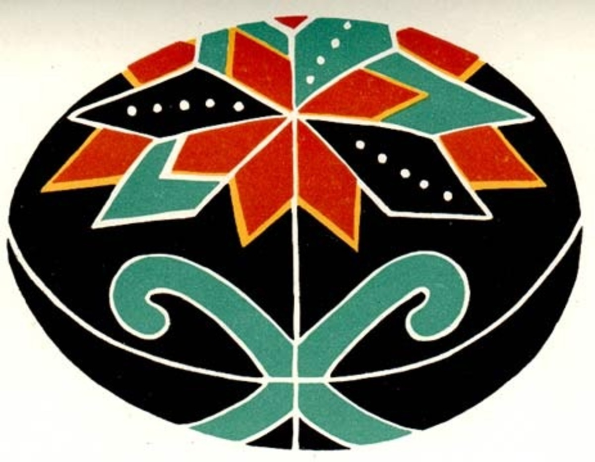

Буковина
На Буковині популярністю користуються геометричні орнаменти та, здебільшого, доволі великі малюнки. Серед орнаментів тут популярні смужки та розети, зображені на темному червоному або чорному фоні.

На Буковині популярністю користуються геометричні орнаменти та, здебільшого, доволі великі малюнки. Серед орнаментів тут популярні смужки та розети, зображені на темному червоному або чорному фоні.